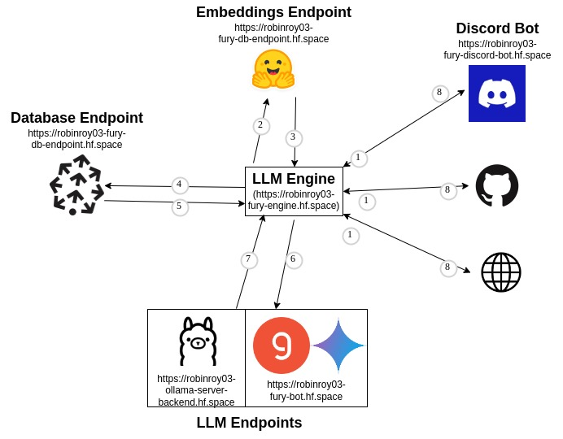

Week 5: LLM Benchmarking & Architecture Modifications#
Hi, I’m Robin and this is my blog about week 5.
This week, we’ll take all the things we did in the previous weeks, and quantify them. Benchmarking an LLM is the process of grading the LLM answer. To grade properly, we need good rubrics, so that’s what I worked on this week. Also, I made some architectural changes, to make the overall development simple.
Things I did in Week 5#
Architectural Update
Earlier, this was our architecture:

This had an obvious issue, all the core logic was inside the Discord Bot. So if I want to say, use the LLM inference for making a GitHub bot, or for benchmarking etc, it wasn’t possible. So I decided to cut the LLM logic from Discord Bot and made a new LLM Router. It’ll handle all the LLM logic from now on, and we do not directly call any other endpoint other than this one.
It makes life simple, every input going into the endpoint goes like this:
{
"query": "Render a cube in fury",
"llm": "llama3-70b-8192",
"knn": "3",
"stream": False
}
Every response coming out will be like this:
{
"response": "Yes, this is how it would be done python import fury....",
"references": "1, 2, 3"
}
- What happens on the inside is completely abstracted away. You just call this and it’ll
call the embedding model
pass embeddings to the database
return them to LLM (which you can choose)
returns LLM answer with references to you
Currently, we support ollama, google and groq providers. That itself is 20+ LLM support, and you could swap between them using /api/groq or api/google or /api/ollama .... Adding another provider is simply adding another endpoint.
So if you do
curl -X POST https://robinroy03-fury-engine.hf.space/api/groq/generate -H “Content-Type: application/json” -d ‘{“query”: “How do I create a sphere in FURY?”, “llm”: “llama3-70b-8192”, “knn”: “3”, “stream”: false}’
You’ll get a response from llama3-70b-8192 using groq. If you do https://robinroy03-fury-engine.hf.space/api/google/generate you can call any google gemini modes like gemini-1.5-pro or gemini-1.5-flash. Same for ollama.
This still could be improved, it does not currently account for vision models. I did not add that because we do not use vision models other than for benchmarking now, and that too is done locally. Benchmarking could also be streamlined, I avoided that because benchmarking is still in development so I’ll have to rewrite every day. Presently you can use this core router for a working LLM generation (you’ll get the same thing you’ll get from the Discord Bot. So if you have a website, all you have to do is call the API).
This is our present architecture:
It is the same thing as above, except we have two new components - LLM Engine and a Groq & Gemini endpoint. When we’ll end up having a conversational model setup (right now, it is one question and one answer), this model will be upgraded to accommodate that. My plan is to extend LLM Engine and add that. Other features such as vision also could be added to this as needed.
Gemini Models added
As mentioned above, I added Gemini models this week. They have a decent free tier. Also, I’m studying the feasibility of fine-tuning using the Gemini models.
LLM Benchmarking
LLM Benchmarking is the process of evaluating the LLM output and giving a score. With this, making the model better will be simply a function of increasing the score. This area is still under development and the things I’ve tried here are the current standard procedures. To understand more about benchmarking, you can read this, this and this. This course is also amazing.
I’ll anyways give a TL;DR:
LLM benchmarking is essentially like writing an English Literature exam and getting the grades. Your evaluator may give you a 4 or a 5, and the reasoning can be varied. For the same answer, you may even get very varied results from 2 different evaluators! Two common rubrics they use are groundedness (whether the answer follows from the material) and completion (whether the answer is complete, whether it fully answers the question with respect to the material). These are the same rubrics we’ll use for LLM evaluation. For code, it’s different. The code should compile and do exactly what it should.
Now FURY Bot does 2 things - writing code & writing answers for common questions (on GitHub issues etc). Presently, I’ve only collected data for coding questions, as they are much easier to evaluate and give a clear sense of direction (also I found more coding data).
- Evaluating FURY code can be done by:
Running the code.
Checking the output.
Now we do this using pytest in the FURY repo for tests. But this approach is tedious, as collecting questions and writing test cases take a lot of time, also the orientation of the 3D objects also matters (an LLM generation is not deterministic). So we are using a vision model moondream2 to check the LLM generated output and verify if it is what we actually wanted.
On a high level, this is what we do (for now):
Take a QnA pair from the collected dataset (I’ve collected ~23 questions).
Ask the LLM to generate a FURY code for that (using the references).
Run this generated code.
Check the output using
moondream2and verify whether it is what we wanted.
There is also fast_eval which checks whether the code compiles and skips moondream2 entirely. This is obviously faster and is also decently good (is actually a pretty good heuristic). If it runs, assume it works :)
This is our current stats: (from now on, we can finally talk using numbers)
Coding benchmark:#
On fast_eval we have a success rate of 47.83% for groq.
On normal_eval we have a success rate of 13.04% for groq.
Note that moondream2 also sometimes mistakes the output for something else. It is close to ~45% when I checked manually. For now, I’m only going to focus on fast_eval as fixing moondream2 is a distraction for the moment. (This actually gets very meta, there are projects where they have benchmarks for the evaluator and so on. Read this.)
What is coming up next week?#
Better benchmark scores :)
Line number highlighting @ references.
Some
referencesimprovements.
Did you get stuck anywhere?#
No, I did not get stuck anywhere.
LINKS:
Thank you for reading!